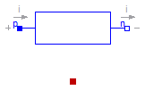

Modelica.Electrical.Analog.Basic.Resistor
Modelica.Electrical.Analog.Basic.Resistor
Modelica.Electrical.Analog.Basic.Resistor
Modelica.Electrical.Analog.Basic.Resistor
Ideal linear electrical resistor

The linear resistor connects the branch voltage v with the branch current i by i*R = v. The Resistance R is allowed to be positive, zero, or negative.
Extends from Modelica.Electrical.Analog.Interfaces.OnePort (Component with two electrical pins p and n and current i from p to n), Modelica.Electrical.Analog.Interfaces.ConditionalHeatPort (Partial model to include a conditional HeatPort in order to describe the power loss via a thermal network).
| Type | Name | Default | Description |
|---|---|---|---|
| Resistance | R | Resistance at temperature T_ref [Ohm] | |
| Temperature | T_ref | 300.15 | Reference temperature [K] |
| LinearTemperatureCoefficient | alpha | 0 | Temperature coefficient of resistance (R_actual = R*(1 + alpha*(T_heatPort - T_ref)) [1/K] |
| Boolean | useHeatPort | false | =true, if heatPort is enabled |
| Temperature | T | T_ref | Fixed device temperature if useHeatPort = false [K] |
| Type | Name | Description |
|---|---|---|
| PositivePin | p | Positive pin (potential p.v > n.v for positive voltage drop v) |
| NegativePin | n | Negative pin |
| HeatPort_a | heatPort | Conditional heat port |
 Modelica.Electrical.Analog.Basic.Inductor
Modelica.Electrical.Analog.Basic.Inductor
Ideal linear electrical inductor

The linear inductor connects the branch voltage v with the branch current i by v = L * di/dt. The Inductance L is allowed to be positive, or zero.
Extends from Interfaces.OnePort (Component with two electrical pins p and n and current i from p to n).
| Type | Name | Default | Description |
|---|---|---|---|
| Inductance | L | Inductance [H] |
| Type | Name | Description |
|---|---|---|
| PositivePin | p | Positive pin (potential p.v > n.v for positive voltage drop v) |
| NegativePin | n | Negative pin |
 Modelica.Electrical.Analog.Basic.Capacitor
Modelica.Electrical.Analog.Basic.Capacitor
Ideal linear electrical capacitor

The linear capacitor connects the branch voltage v with the branch current i by i = C * dv/dt. The Capacitance C is allowed to be positive or zero.
Extends from Interfaces.OnePort (Component with two electrical pins p and n and current i from p to n).
| Type | Name | Default | Description |
|---|---|---|---|
| Capacitance | C | Capacitance [F] |
| Type | Name | Description |
|---|---|---|
| PositivePin | p | Positive pin (potential p.v > n.v for positive voltage drop v) |
| NegativePin | n | Negative pin |
 Modelica.Electrical.Analog.Basic.Ground
Modelica.Electrical.Analog.Basic.Ground
Ground node

Ground of an electrical circuit. The potential at the ground node is zero. Every electrical circuit has to contain at least one ground object.
| Type | Name | Description |
|---|---|---|
| Pin | p |